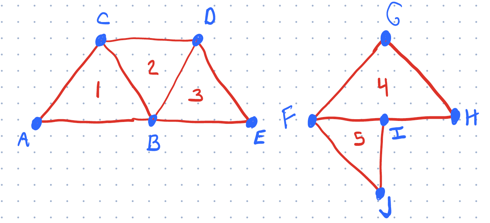

Page 1: Meshes: What you need to know
We discussed meshes in class. Here are the things you need to know.
Mesh Concepts
The main concepts you need to know (some of these are discussed on this page, but many of them will come from lectures and the readings):
- What is a mesh (as a collection of triangles)
- Why we avoid “Triangle Soup”
- What is a good mesh
- avoiding T-Junctions
- good triangles
- consistent orientations
- Indexing vertices for efficiency
- Vertex and Face Properties
- The need for Vertex Sharing
- The need for fancy representations
- You don’t need to know a fancy representation (like Winged-Edge) but you should have a sense why they are important.
- Efficiency tricks (strips and fans)
- We’ll only touch on these briefly
Meshes and Geometry and BufferGeometry in THREE.js
Confusingly, THREE.js uses the term Geometry to mean a collection of triangles, and uses the term Mesh to mean a Geometry (collection of triangles) that has a material associated with it, and all of the other stuff that a “Graphics Object” has (e.g., transformations and hierarchy). A THREE Mesh “has a” Geometry, but a Geometry is the collection of triangles that is more like the common graphics usage of “mesh”.
THREE’s terminology gets more confusing… In the old days, THREE had a Geometry class. This was a very flexible way to represent a set of triangles. It had an API that would allow a programmer to specify collections of triangles in many different ways. But, it was inefficient, so it introduced a much more efficient BufferGeometry class that organized triangle data using data structures that are inflexible, but efficient to send to graphics hardware. Almost everything in THREE (outside of graphics classes) uses BufferGeometry. So, when talking about “Geometry” (a collection of triangles), we’re probably talking about BufferGeometry.
In the old versions of CS559, we used the Geometry class. It was efficient enough, and it was easier to use, and it was more flexible. Basically, to understand BufferGeometry you need to understand the concept of a buffer, which doesn’t come up in class until we discuss graphics hardware. The point of BufferGeometry is that it works the way the hardware does.
In this workbook, we are using BufferGeometry.
Before we can understand it, we need to talk about the basics of meshes.
Triangles and Meshes
Let’s consider a connected collection of triangles. This is a “mesh” in the Computer Graphics sense, (but not a Mesh in terms of THREE). There are three types of “objects” that we encounter: the triangles themselves, the vertices (the corners of the triangles), and the edges (the connect pairs of vertices, and pairs of triangles). If the triangles connect, they will share vertices and edges. Any edge is part of 1 or 2 triangles, a vertex might be part of any number of triangles.
Here is a diagram to help with the explanations:
The first mesh has 3 triangles (1,2,3), made from 5 vertices (A,B,C,D,E). The second mesh is two trangles (4,5), make from 5 vertices (F,G,H,I,J). We will use these to discuss some important properties of meshes.
Generally, our meshes to have some properties that make them “well-formed”:
-
No T-Junctions - triangles either share an edge (2 vertices) or not. Having a vertex that is “on another triangle’s edge” is a bad idea. You can see this in the second picture. Vertex I is a T-junction: the point I is on the edge FH. For these triangles to “touch” point I must be in exactly the right place - otherwise there will be a “crack” (yes, that’s a technical term). If it’s off by a little bit (for example, because of rounding error or because we edit triangle 4), we get a crack. Therefore, if we want triangles to connect, they must share an entire edge - it’s the only way to prevent cracks (we can’t rely on perfect arithmetic).
-
Consistent Orientations - In 2D, all triangles should be either clockwise or counter clockwise. In Picture 1, our triangles are ABC, BDC, and BED (counter-clockwise) or ACB, CDB, DEB (clockwise). If we had ABC, BCD, BDE, they would be inconsistent. When the triangles are consistent, each edge has (at most) one triangle in each direction: note that the edge BC is BC in ABC but CB in DBC. In 3D, having consistent orientation is important because it means the cross products (normal vectors to the triangles) point in the same direction. Usually, we like to have them point outwards. We’ll see this come up below in the backfacing example.
-
Vertex Sharing - If triangles share a vertex, we prefer to store this as a single vertex (that multiple triangles refer to), rather than as a bunch of different vertices. In the old days, this was an important performance consideration, because each vertex must be transformed, and the transformations were expensive. Now, sharing is important for other reasons. For example, it makes it easier to keep vertices consistent. In the example, note how vertex B is part of 3 triangles. If you move vertex B, the triangles stay connected.
-
Good Triangles - There are a bunch of other criteria that are less important now. But basically, we don’t like our triangles to be too small, or have edges that are too short, and we don’t like edges that are too close to each others. We’ll come back to these properties later in the class.
Edges are useful data structures because they help relate triangles and enforce consistency. They are useful in building tools to edit meshes. But we generally don’t use them much in computer graphics. The data structures that explicitly represent edges are cool and useful if you are changing meshes, but we won’t learn about them in class - we’ll make our meshes and not change their connectivity. These fancy data structures are discussed in the optional readings.
For graphics, the main things with meshes are the vertices and the triangles. The data structures need to represent these two things.
Because of vertex sharing, we often prefer to use an indexed representation. With an indexed representation, we keep an array of vertices (each with associated information). Each triangle just needs to have a list of the indices into the array of vertices. So, for the left figure, our “vertex list” would be [A,B,C,D,E], and our triangle list would be [0,1,2, 2,4,3, 2,5,4] (ABC, BDC, and BED).
The alternative to well-formed meshes is an unorganized collection of triangles. This is sometimes referred to as triangle soup. Having structured meshes (vertex sharing, etc.) is useful because it makes it easier to maintain the collection (e.g., avoid cracking, having consistent normals, …). The efficiency gains of structured representations may be lost because we end up splitting vertices.
Where does information live on Meshes?
Consider specifying colors for the mesh. We might want to have the entire mesh be one color. We might want to put a color on a triangle (if we want to have each triangle be a solid color). We might want to allow each vertex to have a separate color (so the triangle has three colors, and interpolates between them in between). Here’s an example of each one:
08-01-01
The left one has a single color for the entire mesh (yellow). The middle one has a color for each triangle (yellow and orange). The right one has vertex colors (see how the colors interpolate over the triangles).
Of course, we would like to have the flexibility to specify the information (color) anywhere we might like. This is where THREE’s old Geometry class was handy: it stored an index representation of a collection of triangles. It allowed storing information about triangles. With BufferGeometry we can only store information at vertices (or on the whole mesh).
If you use the rotation slider, you will see how the lighting changes based on the surface orientation. This will be more interesting in a later example. But also notice… if you turn the object so far that you are looking at its back, it disappears. We’ll explore that problem below when we discuss “backface culling”.
Attributes and Buffers and Vertex Splitting
For reasons relating to how the graphics hardware works, programs prefer to keep as information associated with the vertices (rather than the triangles). The attributes (like position and color) belong to the vertices. The triangles are created as sets of three vertices. They don’t store any information other than the indices of the vertices (in fact, sometimes they don’t even store that… but more on that in a moment).
Now, you are hopefully wondering… how do we deal with the case where one vertex needs to have more than one color? For example, those points in the middle where the orange and yellow triangles connext - those vertices are both yellow and orange (depending on which triangle is using it). How can we have different attributes on shared vertices? (we have the same problem with normals - the points in the middle are shared by both triangles, and each triangle has a differen color).
The short answer is: we cannot. If all information lives on the vertices, we can only share vertices that have all their attributes in common. So, in this example, we cannot have a vertex that is both orange for one triangle and yellow for the other: we need to split the vertex into two different vertices. This goes against our goal of sharing (above).
This “all information on the vertices” is inconvenient: for the middle pair of triangles, we can’t simply make 4 vertices, and specify the colors of each triangle. We need to make 6 vertices, and set the color correctly for each one. This might seem wasteful, and it is a bit of a hassle, but the simplicity of having only one place for “all” information (all attributes are on vertices) makes many things simpler. It’s how the graphics hardware works (we’ll learn more later in the class). So it can be more efficient (the hardware is optimized to do simple things fast).
Because all vertices are the same, we can make simple blocks of memory that store the values for all the vertices as one dimensional arrays. For example, the positions of vertices is just a long list of numbers (3 per vertex). We call blocks of memory “buffers”. We call a block of memory that is meant to store a list of attributes (per vertex) an AttributeBuffer. THREE calls them BufferAttributes. But they are just simple arrays of values - stored in a slightly special way to allow them to be transfered efficiently to the graphics hardware. This has to do with some technical details on how JavaScript handles types.
THREE’s BufferGeometry class stores a collection of triangles. It can have a number of BufferAttributes for the different attributes that you want associated with the vertices. It can handle the triangle indices in two ways: either it will assume that your vertices are in order (basically, your triangles are (0,1,2), (3,4,5), etc.), or you can give it a list of 3n (n=number of triangles) integers which are the indices of the vertices (3 per triangle).
A First Example
The example (
08-01-01.html
08-01-01.js) shown uses BufferGeometry. Here it is again:
08-01-01
Read the code. You will see that I make objects (using the class framework) for “TwoTriangles”, three different ways.
Here is the version of the code using BufferGeometry. This is the code for the two color version:
|
|
Notice that we had to split the vertices (so we have 6 of them) - for example (0,0,0) is repeated, once for each triangle. And note that we need to specify the colors for each of the 6 vertices.
You can also see how we have to put the data for the vertices in special “typed” arrays (the Float32Array) on 88 and 102, and then tell THREE to use these as BufferAttributes. Note how for the positions and the colors, each vertex has 3 numbers (x,y,z or r,b,g), so we need to tell this to THREE when we create the BufferAttribute (lines 96 and 110).
In this case, each triangle is made up of 3 distinct vertices. Triangle 1 is vertices 0,1 and 2; Triangle 2 is 3,4,5. If we don’t tell THREE otherwise, it will assume this and will figure out the indices for us.
THREE has materials specifically designed to work with meshes. If you want materials such as MeshStandardMaterial to use vertex colors, you need to tell it to do so (see vertexColors: true on line 114). Otherwise, it makes the whole mesh one color.
Example: Mesh Normals
This example uses the same two triangles. Except that this time, the normals are done differently for each of the 3 versions. On the left, we use the actual normals of the triangles (which requires vertex splitting). The other two have the center vertices “shared” between the triangles. These vertices have their normals set to be the average of the two faces they touch. This gives the same normals as if it were a smooth, curved piece (rather than two triangles with a crease). Because the lights are on the sides, the middle of this object is dark. But, as you move it, notice the lighting behaves as if this were a curved object. The object in the middle manually specified the normals, on the right, the normals are computed by THREE.
08-01-02
Be sure to read the code in 08-01-02.js and understand how the meshes are put together.
In the “curved” examples, we use the same normal (and color) for the vertex on each of its triangles, so we can re-use the vertex for both triangles. Notice how these examples only have 4 points. In the third example, THREE computes the normals: when it computes it for the vertices in the middle, it averages the normals of all the triangles the vertex touches.
When we use 4 vertices to make three triangles, we need to tell THREE which vertices to use for each triangle. If you look at the code, you’ll see we use setIndex on line 92 to tell it which vertices to use for each triangle.
A Note on BufferGeometry
While BufferGeometry is the preferred way to do things in THREE, it can be less convenient if we want to see our triangles (use their “real” normals and/or have triangle colors). In practice, we don’t usually want to see individual triangles, so this isn’t a big problem.
One trick: the documentation doesn’t have a good list of what attributes we can make. If you noticed, so far we’ve made buffers for position, normal, and color. The are other choices (we’ll see “uv” later in this workbook). The answers to this get a little tricky, and depend on how the graphics hardware works. Basically, the names of the buffers are variables that get used in the programs that run on the graphics hardware to transform vertices and color pixels.
Backfacing Triangles
If you remember from the beginning… if you rotate the triangles too much so you see their “backside” they disappear!
By default, THREE uses an optimization called backface culling. Basically, if a triangle points away from the camera, it doesn’t get drawn. With backface culling, we only see the “fronts” of triangles.
The idea of backface culling is that most of the time, we make solid objects that are surrounded by surfaces. Triangles are on the surface of the object, and their normals should only face outwards. Most objects have fronts and backs - different triangles, which would face different directions. Since you can’t see the back side, which is facing away from the camera, there is (usually) no reason to draw it.
The problem here is that we made an object that is only 1 triangle “thick” - it is infinitely thin, so the same triangle is both the front and the back. If we turn the object around, we see the back of a triangle (which THREE doesn’t draw by default).
There are two ways to deal with this:
- We tell THREE that we want it to draw both sides of the object. We do this by adding an option to the material.
- We make our objects have some thickness, so they have fronts and backs. This is more “realistic” but also more work.
Here is an example - this time, the object is 8 triangles. Some of the triangles face forward, some face backwards. As you spin the object around, note how when you look at the “back” you see different triangles. The object on the right is set to draw front and back facing triangles.
08-01-03
If you look at the code, you’ll notice something unexpected: when I specify the normals, I specify the normals all going the same way! (on line 41, all the normals face the Z direction).
For backface culling, the graphics hardware doesn’t use the normals to determine which direction the triangle is facing. It uses the orientation of the triangle. It effectively uses the right hand rule to determine which direction the normal is facing - it has to do this because not all triangles have their normals specified.
Specifically, it uses the winding direction of the triangle. After projection, are the vertices of the triangle clockwise or counter-clockwise. (counter-clockwise is facing towards the camera). If you look at the code, you’ll see that some triangles are clockwise, others are counter clockwise. This is a good exercise. Note that the vertices form a grid, and the triangles (specified by the index) are in different orders.
So, to practice… (this is worth points) fix the orientations of the triangles. You’ll need to re-order the vertices in 08-01-03.js to be consistently all clockwise or counterclockwise. (if you make them all clockwise, you’ll have to rotate the object to see it on the left). A hint: the positions of the vertices are:
6 7 8
3 4 5
0 1 2
You might also wonder: why in the unfixed version with two-sided triangles are some triangles bright yellow and other triangles dark yellow? We would expect THREE to use the specified normal - so the triangle orientation doesn’t matter. But, THREE does care about triangle orientation - if the triangle is going the wrong way, THREE flips the normal. So, the short lesson: when you make a mesh, orient the triangles correctly!
Summary: Meshes
This is a reminder of what we learned about meshes, and an example of how to make a very simple one (with two triangles). On Page 2 (Mesh Exercise), you’ll get to try to make a more interesting mesh.